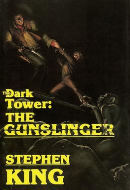
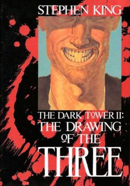
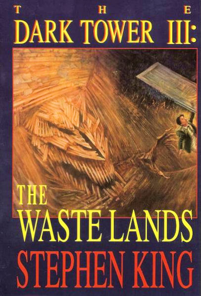
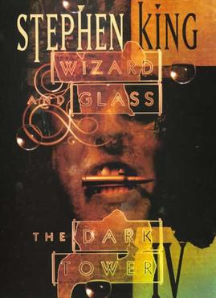
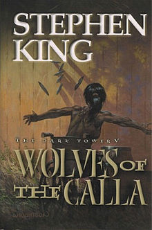

The Dark Tower is a series of books written by American author Stephen King, which incorporates themes from multiple genres, including dark fantasy, science fantasy, horror, and Western. It describes a "gunslinger" and his quest toward a tower, the nature of which is both physical and metaphorical.
King has described the series as his magnum opus. In addition to the eight novels of the series proper that comprise 4,250 pages, many of King's other books relate to the story, introducing concepts and characters that come into play as the series progresses. A series of prequel comics followed the completion of the novels.